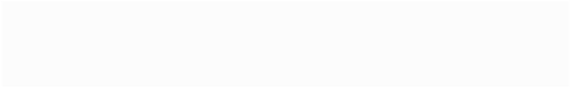
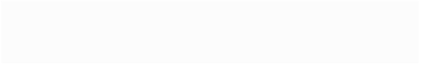
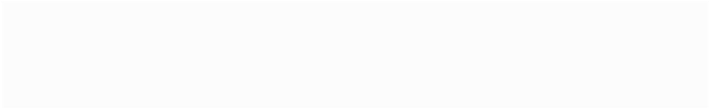

PRACTICE: TAKING NOTES FROM A LECTURE
•When
you are ready, click here to start the lecture.
•Use
one of the different note taking systems to take notes
during the lecture.
•Cornell
•Outlining
•Mapping
•Charting
